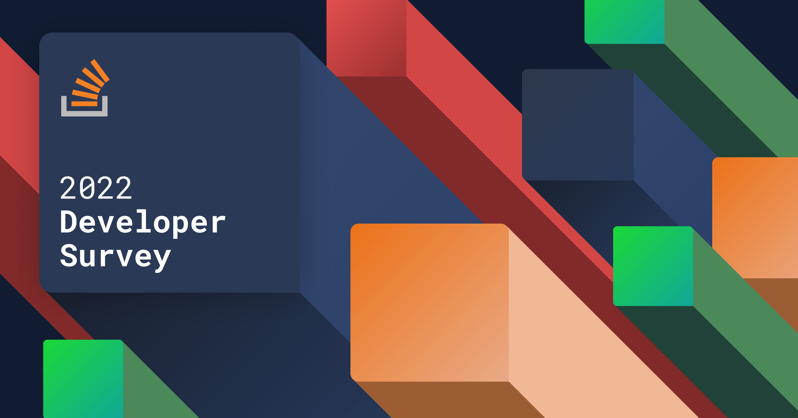

REPORTE STACK OVERFLOW
Reporte de contenido de la famosa encuesta "Stack Overflow Developer Survey 2022".
VER
INVESTIGACIÓN DESARROLLO HTML, CSS Y JS
Investigación sobre los principales comoponentes de una página web (HTML, CSS y JS).
VER


ESTRATEGIA DE PROCESAMIENTO DE ACTIVIDADES
Creación de una estrategia para distribuir las tareas de un procesador por orden de importancia.
VER
INVESTIGACIÓN "TECNOLOGÍAS DE LAS APPS MÁS CONOCIDAS"
Investigación sobre los lenguajes, frameworks, bibliotecas y tecnologías de las apps que usamos hoy en día.
VER